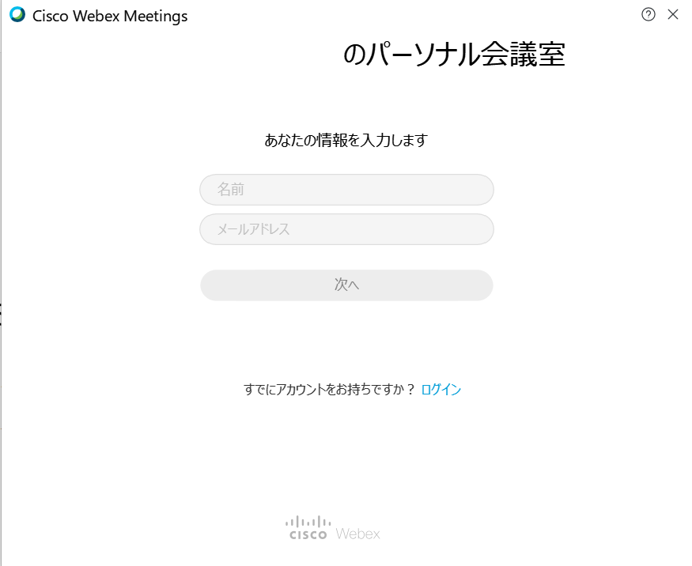
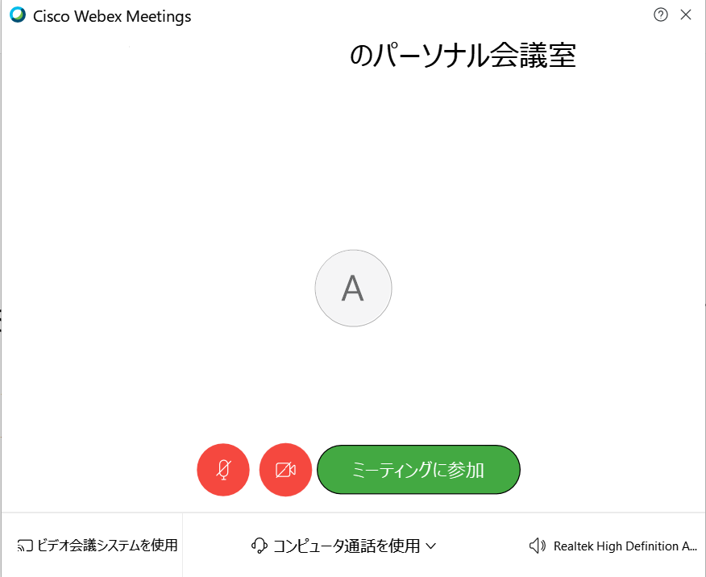

大学で使われはじめるWebexについて、準備の方法を説明していきます。今回はパソコン（Windows10）を使う場合についてです。
（4/19更新）こちらでは、デスクトップ版アプリをダウンロードして使用する方法を説明しています。ブラウザ版を使用される場合は、大学側から掲示がありますので、そちらも確認してください。
（4/19更新）4/17以前に公開された手順でダウンロードすると、ログインせずにゲストとして参加するときに、名前・メールアドレスが変更できないようです。この場合はお手数ですが、一旦cisco Webex Meetingsをアンインストールしていただき、更新された以下の手順を行うようお願いいたします。
（4/19更新）こちらの説明は、西地区（工学部・環境人間学部・理学部）の遠隔授業に対応していますが、それ以外の学部には対応していないことがあります。また、看護学部の場合は方法が全く異なりますので、看護学部のホームページを参照してください。
スマホ・タブレット版と同様です。
Webexはブラウザ版でも利用できますが、デスクトップアプリ版を利用することをおすすめします（毎回のサインインが初回のみで済む、動作がサクサクするなどの利点がある）。まず、工学部の遠隔授業のページから、Webexのテストサイトのリンクをクリックします。
リンクをクリックすると次のような画面になるので、「アプリをダウンロード」をクリックします。

ダウンロードを押すと、左下にダウンロード状況が表示されるようになります（下図はGoogle Chromeを使用している場合）。Internet ExplorerやMicrosoft Edge、Mozilla Firefoxを使用している場合は、ダウンロード前に、開くまたは保存しますか？のデロップが出るので、「保存」をクリックします。
ダウンロードが完了したら、左下のダウンロード状況のところをクリックし、アプリを開きます。Internet ExplolerやMicrosoft Edgeの場合は「ダウンロードが完了しました」と表示されるので「開く」をクリックします（※「ファイルを開く」ではないので注意してください）。
アプリを開き、インストールします。このときに、セキュリティ通知が出たら許可しておきましょう（「はい」をクリックします）。
アプリが起動されると下図のように名前・メールアドレスが要求されます。カメラ・マイクはオフにしておきます（他の人に音声・映像が届いてしまうため）。
（4/17追記）名前・メールアドレスともに大学側から指示が出たようなので、それに従ってください。
下の画面が表示されたら、カメラとマイクをオフにし（どちらも赤になっていればOK）、通話モード（画面の中央下）を「コンピュータ通話」に設定します。下の画面通りになればOKです。
ミーティングの画面になるので、画面が映り、音声が出力されてれば準備は完了しています。どちらかがうまく出力されてない場合は、音量や通信速度等を確認してください。
該当する授業のリンクをクリックします（リンクは大学側からの指示に従ってください）。リンクを開くと下のようなデロップが出るので、「cisco Webex Meetingsを開く」をクリックします（ブラウザによっては自動でアプリが開きます）。

cisco Webex Meetingsアプリを直接開きます。
次のような画面になるので、右上の鉛筆マークをクリックすることでいつでも変更できます。